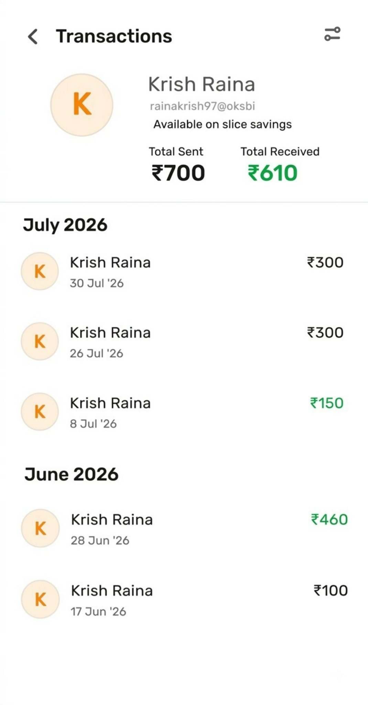
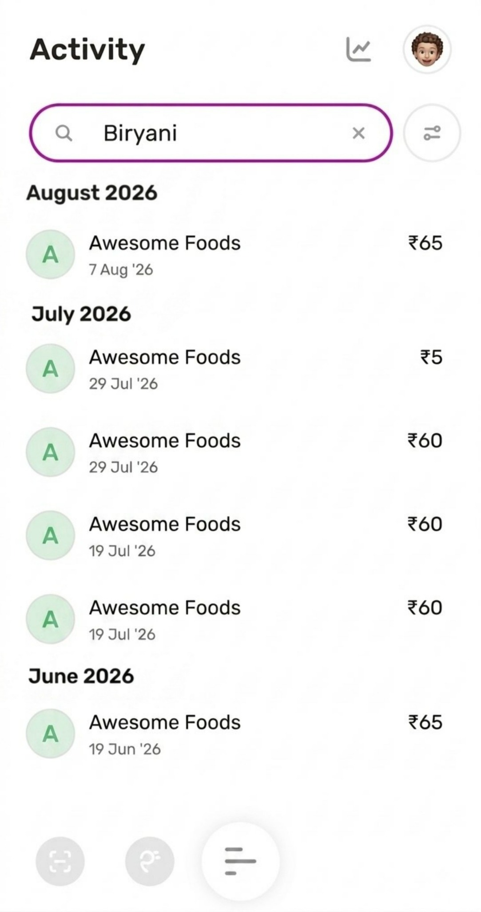

Direct customer exposure
Analyse recurring customer queries, pain points and behavioural patterns across payments, banking, transactions, refunds, Borrow and credit card experiences.
PRODUCT MANAGEMENT INTERN CANDIDATE · BENGALURU
I work close to customers and use their questions, friction and behaviour to identify product opportunities. My portfolio shows how I frame problems and turn them into user-focused product concepts.
Listen for customer, product and experience signals.
Turn incomplete or ambiguous inputs into a clear problem.
Identify opportunities and possible solution directions.
Use UI concepts to make the proposed experience concrete.
I am particularly interested in Product Management because it combines customer understanding, structured problem solving and building better experiences. My work in customer experience gives me direct exposure to how users encounter friction across financial products.
Analyse recurring customer queries, pain points and behavioural patterns across payments, banking, transactions, refunds, Borrow and credit card experiences.
Investigate underlying issues and translate unclear or incomplete customer inputs into clearer problem statements and next steps.
Spot usability, discoverability, accessibility and clarity gaps that could create opportunities for a simpler customer experience.
Explore focused product improvements through specific feature concepts rather than assuming one large solution solves every problem.
slice
Work directly with customers to understand and resolve issues across digital payments, banking, transactions, refunds, Borrow and credit card experiences. Analyse recurring feedback to understand where users experience friction and where the product experience can become simpler and clearer.
These concepts demonstrate my approach to product opportunity identification and feature visualisation.
PRODUCT CONCEPT
Customers who make multiple payments to the same person may find it difficult to locate and review all related transactions together.
Give customers a person-level view of their transaction relationship instead of requiring them to manually search for individual payments.
Bring all related transactions into one place, show Total Sent and Total Received, and organise activity in a chronological view.
Improve discoverability and reduce effort when customers want context about their payment history with a specific person.

PRODUCT CONCEPT
Customers may remember what a payment was for but not remember the exact merchant or transaction name, making a specific payment difficult to find.
People often remember contextual information such as “Biryani” rather than the transaction name shown in their activity.
Expand transaction search to include keywords used in payment notes, allowing remembered context to become a search input.
Help customers find transactions faster by matching the search experience with information they naturally remember.

Support Hinglish, Hindi and regional languages to improve understanding of features, terms and important information.
Add dedicated filters for Refunded and Returned transactions to improve refund-related tracking.
Use explicit messaging such as “Refunded to your Credit Card” so customers know exactly where the money was credited.
Add search within Explore to help customers find features and settings more efficiently.
Allow personalised categories such as Vacation or House Renovation for more meaningful spending analysis.
Clearly explain consequences before a customer switches from Borrow to a Credit Card.
Identify and improve friction around card delivery status and activation.
User Problem Discovery · Customer Research · Problem Framing · Opportunity Identification · Feature Prioritisation · Customer Journey Thinking · Iterative Improvement
UI Mockups · Product Concept Development · Feature Conceptualisation · Feature Visualisation · User-Centric Solution Design
Customer Experience · Behaviour Analysis · Feedback Analysis · Written & Verbal Communication · Problem Articulation · Stakeholder Understanding
Microsoft Excel · Google Sheets · Data Analysis · Pattern Recognition · Microsoft Office · Google Workspace
Vijay Engineering College
Nano Junior College
Gowtham Model School
LET'S CONNECT